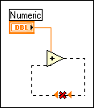

You have wired the output of a function or node back into the input of the same function or node.
To correct this error, select the structure or area of the block diagram that contains the broken wire and select Edit»Remove Broken Wires from Selection. Then reconnect the wires to the appropriate terminals.